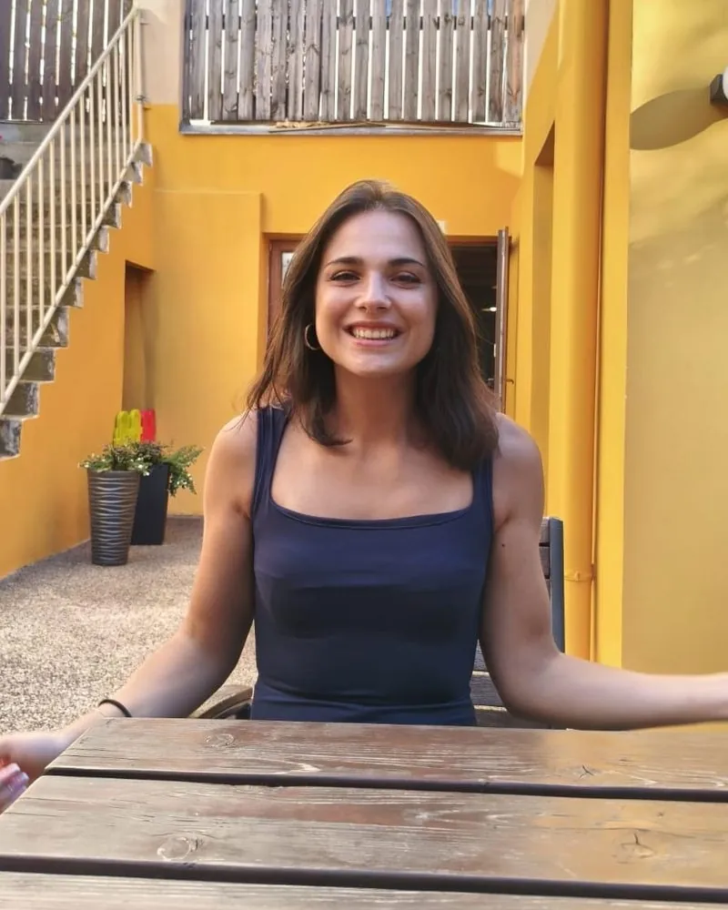

Lekce zdarma
Zdarma
30 minut: seznámíte se s Lucií, ověříte úroveň a naplánujete další kroky
Rezervovat lekci zdarmaJak to funguje
Uveďte svou úroveň, cíle a jestli chcete lekce online, nebo v Praze. Klidně česky. Lucia odpoví do 24 hodin.
Třicet minut na seznámení, ověření úrovně a plán: forma, tempo a materiály. Nezávazně.
Pravidelné lekce online nebo v Praze, s materiály a domácími úkoly mezi hodinami.
Individuální lekce
Lekce jeden na jednoho v balíčcích. Čím víc lekcí, tím nižší cena za jednu.
Zdarma
30 minut: seznámíte se s Lucií, ověříte úroveň a naplánujete další kroky
Rezervovat lekci zdarma€30 za lekci
€150 za balíček
Chci 5 lekcí€27 za lekci
€270 za balíček
Ušetříte €30
Chci 10 lekcíNejvýhodnější
€25 za lekci
€500 za balíček
Ušetříte €100
Chci 20 lekcíPlatba přes Revolut nebo bankovním převodem. Ceny jsou v eurech, částky v Kč a USD jsou orientační přepočet.
Skupinový kurz
Dvanáct týdenních lekcí živě online přes video, ve skupině tří až pěti lidí. Hodně mluvení a nižší cena za lekci než u individuální výuky.
€18 za osobu a lekci
€216 za celý 12týdenní kurz
Od nuly: představit se, objednat si, zeptat se na cestu a běžná konverzace, se správnou výslovností od prvního dne.
Přihlásit sePřekonejte stagnaci: minulé časy, které konečně pochopíte, širší slovní zásoba a řízená konverzace.
Zapsat se na čekací listinuNuance, idiomy a styl: vyprávějte, diskutujte a obhajujte svůj názor italsky, s přesnou zpětnou vazbou.
Zapsat se na čekací listinuKlepněte na větu, která vás nejlépe vystihuje. Lucia vaši úroveň potvrdí na lekci zdarma.

O Lucii
Lucia je rodilá mluvčí a kvalifikovaná lektorka italštiny. Učí lidi, kteří chtějí mluvit, ne jen se učit pravidla: přesná výslovnost, gramatika, která dává smysl, a jistota vyjádřit se. Mluví trochu česky a má zkušenosti se studenty, kteří mluví jen česky.
Každá chyba je krok k vašemu novému italskému hlasu.
29 recenzí od studentů, kteří se učí italsky s Lucií. Recenze necháváme v původním znění, v angličtině.
Najetím nebo klepnutím zastavíte
“Lucia made so many things clear to me that had confused me until now. She did it easily, clearly and with joy… I highly recommend working with her!”
“She's so kind and patient, making learning fun and efficient at the same time. Genuinely the best tutor you'll ever find!!!”
“After a month, I was able to have conversations with Italians in Italy!”
“Great Teacher! Fun and engaging. Very good at adapting to my level (absolute beginner)!”
“She explains all grammar and vocabulary topics very well. She focuses on the student's needs and adapts the lessons accordingly… her lessons are never boring!”
“Thanks to her, I have made enormous progress in a short time. If you are looking to learn or improve your Italian, this is the teacher for you!”
“…she takes the time to break things down in a way that makes them easy to understand and remember.”
“Lucia has a fun personality, leads a great conversation and provides very effective tuition. A true superstar.”
“Excellent teacher! She makes it fun and interesting.” Lynn
“Lucia is so good in explaining Italian grammar! :) book her, she's so much fun!” Kavita
“It’s just fun with Lucia! She is great!” Uschi
“She is great!! Very patient and clear explanation. I highly recommend!” Jianing
“Lucia is a great Italian teacher. Knowledgeable, fun and patient.” Rafael
“It is always a great pleasure for me to study with Lucia.” Willem
“Lucia has a very fun way of teaching, I enjoyed the lesson.” Ondřej
“Learning Italian with Lucia is fun and educational.” Bernat
Vaše lekce
Praha 1, 2 a 3 (Staré Město, Nové Město, Malá Strana, Žižkov), v kavárnách nebo na jiných místech, na kterých se domluvíte. Ideální, pokud se nejlépe učíte tváří v tvář.
Živé videolekce se sdílenou tabulí a materiály, v čase, který vám vyhovuje. Většina lekcí probíhá právě takto.
Italian with Lucia na Googlu: přečtěte si, co píší ostatní studenti, nebo se podělte o vlastní zkušenost.
Důležitá slovní zásoba, srozumitelná gramatika a mluvení hned od začátku.
Hlásky a stavba vět, aby vám rozuměli hned napoprvé.
Mluvení, kulturní nuance a skutečné situace.
Formální etiketa, odborná slovní zásoba a situace, které vás opravdu čekají.
Pokud se rádi učíte z knihy, lekce mohou navazovat na učebnici Nuovo Espresso (ALMA Edizioni). Pokud ne, všechny materiály dostanete od Lucie. Rozhodnete se po lekci zdarma.
Ne. Lekce se přizpůsobí vaší úrovni, od úplných začátečníků po pokročilé. Od první lekce si budujete pevné základy i sebedůvěru.
Výuka probíhá v italštině a vysvětlení podle potřeby v angličtině. Lucia mluví trochu česky a má zkušenosti s výukou studentů, kteří mluví jen česky, takže se domluvíte i bez angličtiny. Napsat jí můžete česky, anglicky nebo italsky.
Obojí. Učit se můžete online odkudkoli na světě, nebo se s Lucií potkávat osobně v Praze 1, 2 a 3.
V Praze 1, 2 a 3, v kavárnách nebo na jiných místech, na kterých se domluvíte. Přesné místo Lucia potvrdí při rezervaci. Každou lekci lze mít i online.
Vyplňte krátký formulář na stránce Lekce zdarma a uveďte svou úroveň a cíle. Lucia odpoví do 24 hodin a domluvíte si termín. Lekce trvá 30 minut: seznámíte se, Lucia ověří vaši úroveň a probereme plán. Je to nezávazné.
Skupina pro začátečníky začíná v lednu: 12 týdenních lekcí, živě online přes video, ve skupině 3 až 5 lidí. Skupiny pro mírně pokročilé a pokročilé se otevřou, jakmile se na čekací listinu zapíšou tři lidé. Přihlásíte se a Lucia s vámi domluví den a čas; platíte až po potvrzení skupiny. Podrobnosti najdete na stránce skupinového kurzu.
Ne, učebnice je dobrovolná. Lekce vycházejí z vašich potřeb a cílů. Pokud se rádi učíte z knihy, mohou navazovat na řadu Nuovo Espresso a Lucia vám na lekci zdarma poradí, který díl se hodí.
Ano. Individuální lekce lze přizpůsobit práci, cestování nebo přípravě na zkoušku.
Po lekci zdarma si každou lekci domluvíte s Lucií a ke každé rezervaci dostanete potvrzení: uschovejte si ho. Lucia má všechny rezervace ve svém kalendáři. Časy skupinových lekcí Lucia potvrdí při přihlášení.
Ano, nejpozději 24 hodin před začátkem: stačí napsat Lucii e-mail. Později už lekci zrušit nelze a počítá se jako odučená. Stejné pravidlo platí pro individuální i skupinové lekce.
Nejraději přes Revolut, funguje i bankovní převod. Můžete si vybrat balíček 5, 10 nebo 20 lekcí, nebo skupinový kurz.
Třicet minut s Lucií, online nebo v Praze. Vyplňte krátký formulář a Lucia odpoví do 24 hodin.
nebo napište na lucia.scollo2000@gmail.com · otevřít v Gmailu